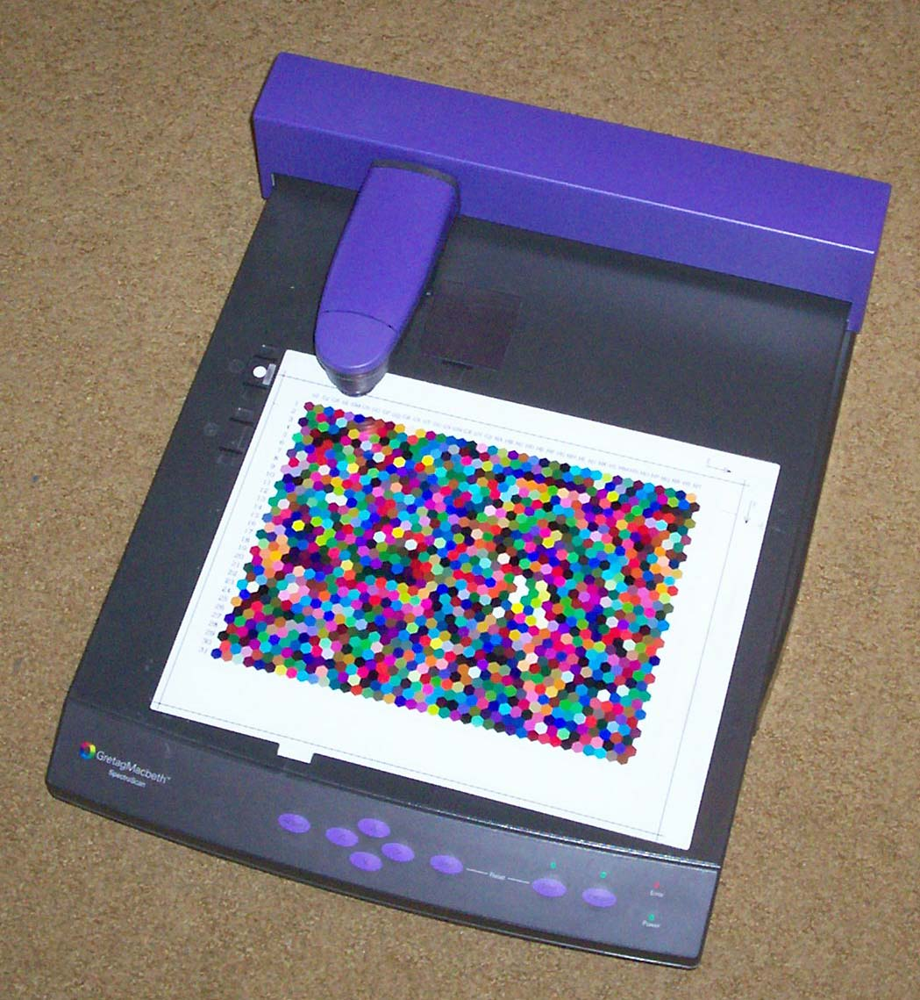
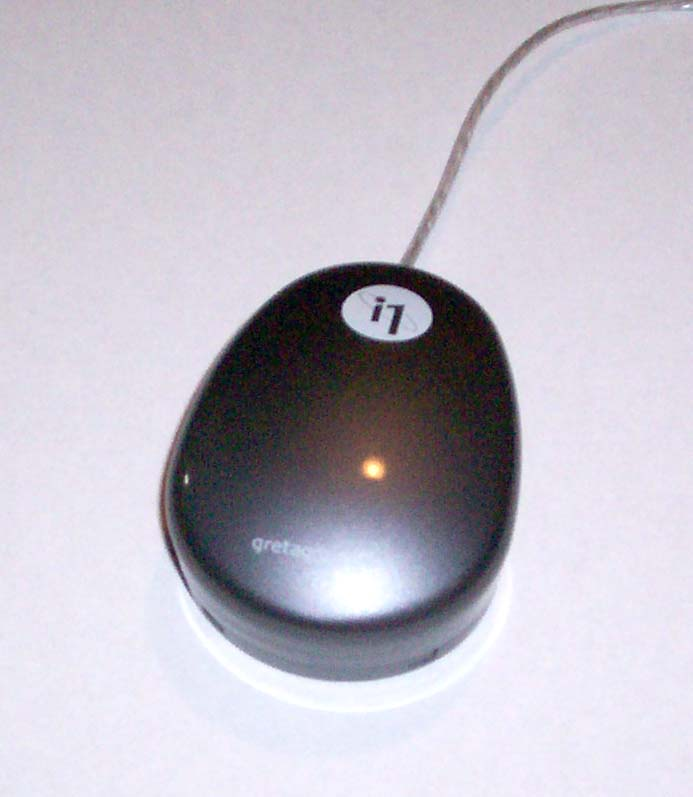
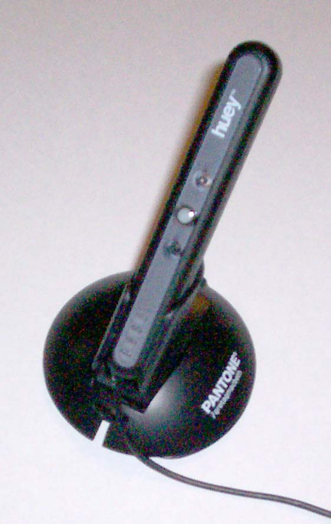

Operation of particular instruments
The following instruments are directly supported:
X-Rite:
DTP20
"Pulse"
- "swipe" type reflective spectrometer, that can be used untethered.
DTP22 Digital
Swatchbook
- spot type reflective spectrometer.
DTP41
- spot and strip reading reflective spectrometer.
DTP41T
- spot and strip reading reflective/transmissive spectrometer.
DTP51
- strip reading reflective colorimeter.
DTP92
- CRT display colorimeter.
DTP94 "Optix
XR" or "Optix
XR2"
or "Optix Pro"- display colorimeter.
ColorMunki
Design or Photo
-
spot and "swipe" reflective/emissive spectrometer (UV cut only).
ColorMunki Create
- display colorimeter.
Gretag-Macbeth (now X-Rite):
Spectrolino
- spot reflective/emissive spectrometer
SpectroScan
-
spot reflective/emissive, XY table reflective spectrometer
SpectroScanT
- spot
reflective/emissive/transmissive, XY table reflective spectrometer
Eye-One Pro "EFI ES-1000"
-
spot and "swipe" reflective/emissive spectrometer
Eye-One Monitor
-
spot and "swipe" emissive spectrometer
Eye-One Display
1 or
2 or LT
- display colorimeter
Huey
- display colorimeter
Sequel imaging (Now X-Rite):
MonacoOPTIX
- display colorimeter (Treated as an Eye-One Display 1)
[The Sequel Chroma 4 may also work.]
DataColor ColorVision:
Spyder 2
- display colorimeter (Note that the user must supply
firmware)
[The Spyder 1 also seems to work.]
Spyder 3
- display colorimeter.
Other:
Colorimètre
HCFR
- display colorimeter
General information about:
Strip reading instruments
X-Y Table instruments
Spot reading instruments
Strip reading instruments
When used with a DT20, DTP41, DTP51, Eye-One Pro
or ColorMunki
strip reading
instrument,
chartread
will first establish communications with the instrument, and then set
it
up ready to read the strips. The strips are labeled A to ZZ, and for
each
strip it will prompt:
About to read strip XX :
where XX is the strip label, and this is followed by the available
options to navigate, read the strip, or finish.
For the DTP51 you should feed
the strip
into the instrument, and the microswitch will trigger the read.
For the
DTP41 you should line the
appropriate strip up
in
the machine, and press its button.
For the Eye-One Pro you should
set
the guide to the appropriate strip, place the instrument ahead of
the first patch, and then press and hold the instruments button. When
you hear a beep from the computer, you can then move the instrument
steadily over the patches, releasing the button after the instrument is
past the last patch. Moving the instrument too fast or changing speeds
may cause a mis-read, or a scan with few samples read per patch.
For the ColorMunki with the
default chart, the patches are the same width as the silver portion of
body (white version), or the textured portion of the body (black
version). Place aperture of the the instrument (located at its center)
in the white space ahead of
the first patch, and then press and hold the instruments button. When
you hear a beep from the computer, you can then move the instrument
steadily over the patches, releasing the button after the instrument is
past the last patch. Moving the instrument too fast or changing speeds
may cause a mis-read, or a scan with few samples read per patch. For
the high density ColorMunki
chart (printtarg -h), the patches are
arranged so that three rows are exactly the width of the body of
the instrument. If you are careful you can use this to guide the center
of the instrument over each row, or you may prefer to use something
like a plastic ruler to help guide the instrument.
Using
the DTP20 or the Eye-One Pro or ColorMunki with a randomized chart
layout, the strip may be scanned
from either direction. If a randomized chart layout has not been used
for the Eye-One Pro or ColorMunki, then the chart should
only be read in the one direction (use chartread
-B).
Note
that you may have to check that system alert sounds are enabled and at
a suitable volume to in order to hear the beep prompt. For the Eye-One
Pro and ColorMunki, a second beep will sound after a successfully read
strip, or a
double beep will sound, indicating a failure or warning that
needs attention. See also the note on Linux in installation.
If the strip is read successfully, the line will be followed with:
Ready to read strip XX :
Strip
read
OK
If there is an error of some sort, a message will be issued, and you
will
be asked whether to abort the chart reading, or retry the
failed strip:
Ready to read strip XX :
Strip read failed due to misread (Not enough patches)
Hit Esc to give up, any other key to retry:
If you are unable to successfully read a strip after several retries,
you can skip that strip using the 'n'
key, and save
the chart readings without that strip.
If the strip is read successfully, but the patches values don't seem to
be what is expected, you will get the following type of warning:
Ready to read strip XX :
(Warning) Seem to have read strip YY
rather
than
XX !
Hit Return to use it anyway, any other key to retry,
Esc, ^C or Q to give up:
This could be because you have accidentally read the wrong strip (a
common mistake), or it could be that the device response is so
different from what is expected that warning is erroneous, or you may
get a lot of these sorts of warnings if you are accidentally reading
the wrong chart.
If you are absolutely sure you lined up the correct strip, then hit
return,
otherwise
line the appropriate strip up again, and hit some other key (ie. space).
Erroneous warnings are less likely if a previous profile for a device
was given to targen to set
more accurate expectations.
You may also see the following type of warning:
Ready to read strip XX :
(Warning) Patch error YY.YYY (>35 not good,
>95 bad)
There is at least one patch with an very unexpected
response!
Hit Return to use it anyway, any other key to retry,
Esc, ^C or Q to give up:
Similar to the previous warning, this indicates that while the right
strip appears to have been read, one of the patch readings is quite
different to what is expected. This may indicate an error of some sort
(ie. damaged test chart, or bad instrument positioning), or may be
erroneous if the actual device response is quite different to the
expectation. Erroneous warnings are less likely if a previous profile
for a device
was given to targen to set
more accurate expectations.
You can also navigate the next strip to be read using the 'f' key to move forward and the 'b' keys
to move backwards. The prompt will indicate whether this strip has
already been read or not, or whether all strips have been read. You can
also use 'n' to move forward
to the next unread strip. After each successful reading it will move
forward to the next unread strip. When you are finished, use the 'd' to indicate that you are done.
You can choose to finish before all the strips are read, and the
patches that have been read will be saved to the .ti3 file. This is
useful if you are unable to read a particular strip successfully, or if
you are unable to finish the chart in one session, and you can later resume reading the chart by
using the chartread -r flag.
[You could resume reading the chart patch by patch using the chartread -r -p if you are unable to
read a strip successfully.]
You can abort the whole process at any time by hitting Escape, and the
readings will not be saved.
X-Y Table instruments
When you are using an XY table type instrument, such as a Gretag
SpectroScan,
chartread will first establish communications with the
instrument,
and then set it up ready to read the chart. You will be prompted for
each
sheet with a message such as:
Please make sure that the white reference is in slot
1, then
place sheet 1 of 4 on table, then
hit return to continue, Esc to give up
After hitting return you will be prompted to line up three squares on
the
sheet, one at a time:
Using the XY table controls, locate patch A1 with
the
sight,
then hit return to continue, Esc to give up
On completing this, the instrument will commence reading each sheet.
Spot reading instruments
When used with a DT22 or SpectroLino or use the patch by
patch reading mode (chartread -p)
with the Eye-One Pro
or ColorMunki
instrument,
or use the external values mode (chartread
-x), chartread
will first establish communications with the instrument, and then set
it
up ready to read the patches. The patches are typically labeled by
column A to ZZ, and row 1-999. Each
patch will prompt:
Ready to read patch 'XX' :
where XX is the patch label, and this is followed by the available
options to navigate, read the strip, or finish.
Place the instrument on the indicated patch, and trigger a reading
using one of the available methods (typically using the instrument
switch of pressing a key).
There should be an audible prompt on a successful or failed reading.
Note
that you may have to check that system alert sounds are enabled and at
a suitable volume to in order to hear the beep prompt. For the Eye-One
Pro and ColorMunki, a second beep will sound after a successfully read
strip, or a
double beep will sound, indicating a failure or warning that
needs attention. See also the note on Linux in installation.
If the patch is read successfully, the line will be completed with:
Ready to read patch XX :
Patch
read
OK
If there is an error of some sort, a message will be issued, and you
will
be asked whether to abort the chart reading, or retry the
failed patch:
Ready to read patch XX : read_strip returned
'Strip
misread' (Bad reading)
Strip read failed due to misread
Hit Esc to give up, any other key to retry:
You can navigate the next patch to be read using the 'f' key to move forward and the 'b' keys
to move backwards, while 'F'
and 'B' will move forward and
backwards by 10 patches. The prompt will indicate whether this patch
has
already been read or not, or whether all patches have been read. You
can
also use 'n' to move forward
to the next unread patch. When
you are finished, use the 'd'
to indicate that you are done. You can choose to finish before all the
patches are read, and they will be saved to
the .ti3 file. This is useful if you are unable to finish the chart in
one
session, and you can later resume
reading the chart by using the chartread
-r flag.
You can abort the whole process at any time by hitting Escape, and the
readings will not be saved.
ColorMunki
reflective/emissive spectrometer
")
Availability:
The ColorMunki from X-Rite is
currently available in two different packages from the manufacturer.
These packages differ in what features the manufacturers software
provides, as well as cosmetic differences between the instrument (white
and black). This comparison chart
illustrates the differences. Used with Argyll, there are no differences
in operation of a ColorMunki instrument, irrespective of which package
it came with. The ColorMunki Design has the lowest RRP, but the Photo
package may be cheaper with discounting .
Limitations:
Unlike the Eye-One Pro, the ColorMunki is only available in a U.V. Cut
(Ultra Violet filtered) model. This means that it is not suitable for
use with the Fluorescent Whitener Additive Compensation option in
Argyll (see here for a discussion about what
FWA compensation is).
Patch recognition:
For the best chances of good patch recognition, the instrument should
be drawn smoothly and not too rapidly over the strip. If there is a
misread, try slowing down slightly.
Generally a higher quality set of readings will result if slower scans
are used, since there will then be more samples averaged for each patch.
In chartread, the -T ratio
argument modifies the patch consistency tolerance threshold for the
ColorMunki. In recognizing patches
in a strip, the instrument takes multiple readings as the strip is
read, and then divide the readings up into each patch. It then
check the consistency of the multiple readings corresponding to each
patch, and reject the measurement if they are too inconsistent. For
some media (ie. a coarser screens, fabric etc.) the default tolerance
may be unreasonably tight, so the -T
ratio argument can be used to modify this criteria. To loosen
the tolerance, use a number greater than 1.0 (ie. 1.5, 2.0).
Note that printtarg provides the -h option that allows the choice of two
different patch row widths with ColorMunki test charts.
DTP20
"Pulse" reflective spectrometer

Availability:
The DTP20 from X-Rite was discontinued during 2007,
but may still be available from old stock or second hand.
Special features:
The DTP20 has a couple of
unique features that Argyll can take advantage of. One is that it can
operate un-tethered (off line). A whole chart can be read un-tethered
by first
clearing any previous readings in the instrument, then reading the
chart TID strip, before reading all the other strips. The instrument
can then be connected up to chartread,
which will recognize the chart, and download all the measurements.
If there is no chart in the instrument when chartread connects to it,
then it will use the strip by strip tethered mode, just like the other
strip instruments. If the right number of spot readings are present in
the instrument, these will be used by chartread
too.
Un-tethered spot measurements can also be read in using spotread,
which will notice the stored readings, and offer to print them out, or
they can be ignored, and tethered readings taken. This will
clear any saved spot readings.
Note that tethered (on-line)
strip reading
will only work if the firmware in the device is version 1.03 or
greater. You can check the firmware version by running with the verbose
option: -v
DTP22
Digital Swatchbook reflective spectrometer

Availability:
The DTP22 from X-Rite is a discontinued
instrument. It may still be available second hand. It is capable
of reading colored patches one at a time.
DTP41 reflective, DTP41T reflective/transmissive
spectrometers

Availability:
The DTP41 and DTP41T from X-Rite is a discontinued
instrument. It may still be available second hand.
The series II instruments (DTP41B
and DTP41TB) offer both serial
and USB connection. Note that currently only serial operation using
Argyll is possible with these instruments.
DTP51 reflective
colorimeter

Availability:
The DTP51 from X-Rite is a discontinued
instrument. It may still be available second hand.
Operation:
The DTP51's switch is triggered by inserting a strip into
the slot.
DTP92 CRT display colorimeter

Availability:
The DTP92 from X-Rite is a discontinued
instrument. It may still be available second hand. It will only
read CRT technology displays.
DTP94, "Optix XR" or "Optix
XR2" or "Optix Pro" display
colorimetrers


Availability:
The DTP94 from X-Rite is a discontinued
instrument. It may still be available as old stock, or second
hand. It was sold as an instrument without software as the DTP94, and
packaged with software from the manufacturer as the "Optix XR" range.
Spectrolino reflective/emissive spectrometer

Availability:
The Spectrolino from
Gretag MacBeth (Now X-Rite) is a discontinued instrument. It is often
available second hand. If buying it second hand, make sure it comes
with all it's accessories, including white reference, spot reading
adapter, display reading adapters, filters (UV, polarizing, D65) and
power supply.
SpectroScan reflective/emissive and SpectroScanT
reflective/emissive/transmissive spectrometers

Availability:
The SpectroScan and SpectroScanT from
Gretag MacBeth (Now X-Rite) is a discontinued instrument. It is the
combination of an X-Y table and the Spectrolino
instrument. The SpectroScanT
is capable of measuring transparency. It is often available second
hand. If buying it second hand, make sure it comes
with all it's accessories, including white reference, spot reading
adapter, display reading adapters, filters (UV, polarizing, D65) and
power supply.
Eye-One Pro
reflective/emissive spectrometer

Availability:
The Eye-One Pro from X-Rite (was Gretag MacBeth) is
available in two packages from the manufacturer.
These packages differ partly in what accessories come with the
instrument, but primarily in what features the manufacturers software
provides. This comparison chart
illustrates the differences. Used with Argyll, there are no differences
in operation of an
Eye-One Pro instrument, irrespective of which package it came with. The
lowest cost package is the i1Basic,
and it is also included in the i1XTreme
package.
The EFI ES-1000 (which is a re-badged Eye-One Pro) is also reported to
work with Argyll.
Unless you know what you're doing, and have a very specific reason to
buy an instrument fitted with a UV (Ultra Violet) filter, make sure
that you buy an instrument without the filter. A UV filtered instrument
can't deal intelligently with FWA (Fluorescent Whitener Additive)
effects in paper. (Look here for more
information about FWA compensation.) You can emulate a UV cut
instrument quite well in
Argyll by using FWA compensation mode, and supplying a UV filtered D50
illuminant spectrum (ie. ref/D50_0.0.sp).
There have been three revisions of the Eye-One Pro, Rev. A, B and D.
The rev D is capable of sampling twice as fast as the Rev. A and B
versions of the instrument, and is also available with an ambient light
reading capability.
NOTE for those running on Linux
with a Rev. D, there is a problem with the current (as of Feb 2008)
Linux USB
stack that causes the instrument to stop working once it has been used.
The only workaround is to unplug and replug the instrument in again,
whereupon it can be used one time again. A fix for this problem will
probably turn up in the Linux 2.6.26 kernel release.
Patch recognition:
For the best chances of good patch recognition, the instrument should
be drawn smoothly and not too rapidly over the strip. If there is a
misread, try slowing down slightly. The Rev A and B. instruments have a
slower
sampling rate than the latter
revision instruments, and hence must be used a bit more slowly.
Generally a higher quality set of readings will result if slower scans
are used, since there will then be more samples averaged for each patch.
In chartread, the -T ratio
argument modifies the patch consistency tolerance threshold for the
Eye-One Pro. In recognizing patches
in a strip, the instrument takes multiple readings as the strip is
read, and then divide the readings up into each patch. It then
check the consistency of the multiple readings corresponding to each
patch, and reject the measurement if they are too inconsistent. For
some media (ie. a coarser screens, fabric etc.) the default tolerance
may be unreasonably tight, so the -T
ratio argument can be used to modify this criteria. To loosen
the tolerance, use a number greater than 1.0 (ie. 1.5, 2.0).
Differences between reading modes:
The spotread -d mode uses a fixed integration time, choosing 1
of 3 depending on the display brightness. The advantage of this is that
the readings are all consistent (there can be no mismatch of
sensitivity due to integration and/or gain changes), and the dark level
is calibrated at the exact integration time used.
The spotread -e or -a modes are adaptive, so the range of brightness is
much greater, but the measurement time will be variable, and the dark
level
is interpolated. The adapative mode can be used with dispcal and
dispread by using the -V flag, and this may give better results for
displays capable of very deep blacks.
Special features:
A feature unique to Argyll when used with the Eye-One
Pro, is the high resolution spectral mode. This returns spectral
measurements at 3.333 nm spacing, rather than the default 10nm spacing,
and also extends the range of wavelengths slightly. This high
resolution may assist in giving better accuracy for "peaky" emissive
sources such as illuminants and displays. The high resolution mode is
selected by using the -H flag
on the command line to dispcal,
dispread, chartread, and spotread. It can also be toggled on
and off within spotread using
the h key. The extended range
down to 350nm may give some information about an illuminants ultra
violet content, although the accuracy of the readings between 350-380,
and 730-750nm should not be relied upon.


Eye-One Monitor
emissive spectrometer

Availability:
The Eye-One Monitor
from X-Rite (was Gretag MacBeth)
is a discontinued instrument. It was
a lower cost version of the Eye-One
Pro without reflective measurement capability. See Eye-One Pro
reflective/emissive spectrometer for
details on the operation of this instrument.
Eye-One Display 1,
Eye-One Display 2, Eye-One Display LT, ColorMunki Create colorimeters,
 
Instrument Availability:
The Eye-One
Display LT
and Eye-One Display 2 are
currently available, packaged in
various ways by the manufacturer, X-Rite.
The ColorMunki Create
colorimeter can also be used, and will appear as an i1Display2
colorimeter.
The Eye-One Display 1
is a discontinued instrument.
The Eye-One Display LT is a less expensive package
with more limited software from the manufacture.
The Eye-One Display 2 package
has more software features, but the instruments are virtually
identical, and will operate identically using Argyll.
The ColorMunki Create package is
another alternative, and will operate identically using Argyll.
Huey colorimeter

Availability:
The Huey is widely
available under the Pantone name
as well as the manufacturer, X-Rite.
There are two packages available, the lower cost Huey
with more limited software from the manufacturer, and the higher cost Huey
Pro with more software features, but the instruments are virtually
identical, and will operate identically using Argyll.
MonacoOPTIX
colorimeters


Instrument Availability:
Availability:
The MonacoOPTIX from
Monaco Soft is a discontinued instrument. It may still be
available as old
stock,
or second hand. It was sold packaged with software from the
manufacturer. The Sequel Chroma 4 appears to be a similar instrument,
and both seem to operate as if they were an Eye-One Display 1 using
Argyll.
Spyder 3
colorimeter


Availability:
The Spyder3Elite, Spyder3Pro and Spyder3Express are a currently
available instruments.
The manufacturer DataColor,
appears to be hostile to the use of these instruments under Linux, so
it is probably best to look at one of the other colorimeters, unless
you already happen to have a Spyder 3 that you want to use. The Spyder3Elite and Spyder3Pro appear to be identical
hardware with different software from the manufacturer. The Spyder3Express lacks the ambient
sensor.
[Note that this instrument doesn't seem particularly suited to
measuring CRT displays. The Spyder 2 or one of the other instruments
may be a better choice in this case.]
Operation:
The ambient light sensor can be used with the Spyder3Elite and Spyder3Pro instruments, but returns
a monochrome reading.
Spyder 2
colorimeter

Availability:
The Spyder 2 has been superseded by the new
Spyder 3, but may still stocked by many dealers, and may be available
second
hand. The manufacturer DataColor,
appears to be hostile to the use of these instruments under Linux, so
it is probably best to look at one of the other colorimeters, unless
you already happen to have a Spyder 1 or 2 that you want to use.
Operation:
Important Note about the
ColorVision Spyder 2 instrument
support:
This instrument cannot function without the driver
software having access to the vendor supplied PLD firmware pattern for
it.
This firmware is not provided with Argyll, since it
is not available under a compatible license.
The purchaser of a Spyder 2 instrument
should have received a copy of this firmware along with their
instrument, and
should therefore be able to enable the Argyll driver for this
instrument by
using the spyd2en utility.
USB hub problems:
Note that the Spyder doesn't appear to operate at all well if
attached to a USB hub. If Argyll has difficulty in reliably talking to
the Spyder, try connecting it directly to the computer, rather than via
a usb hub. (This seems to be a bug in the Spyder USB implementation.)
Colorimètre
HCFR colorimeter

Availability:
The Colorimètre
HCFR Probe is a kit instrument from HCFR.
Operation:
The accuracy of this instrument does not seem to be comparable to the
commercial
instruments when used for measuring displays, particularly in the area
of measuring dark colors, and I've seen the best results when used with
a CRT display. It may well give good results in calibrating projectors,
since this was what it was designed to do